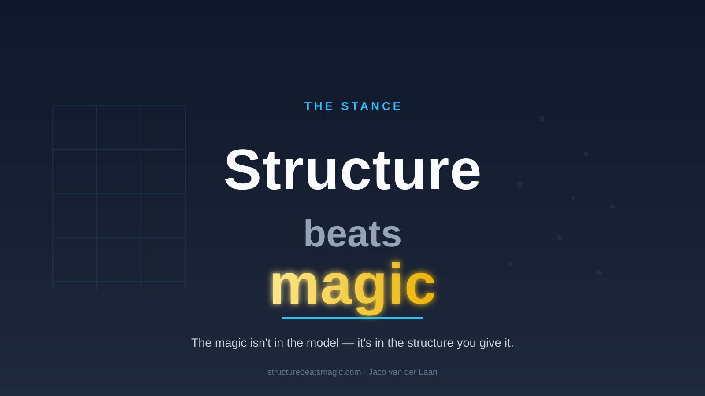
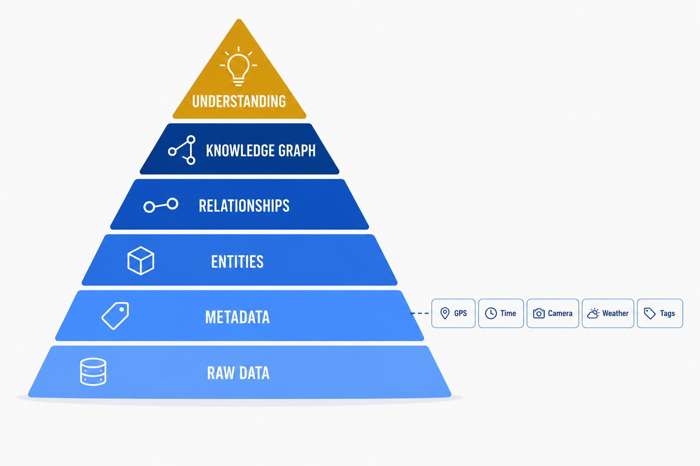
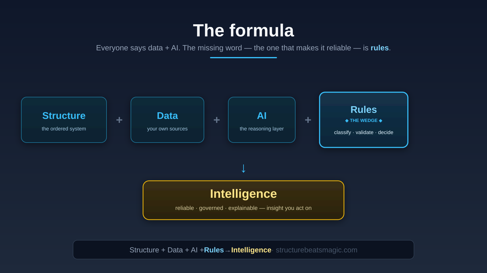
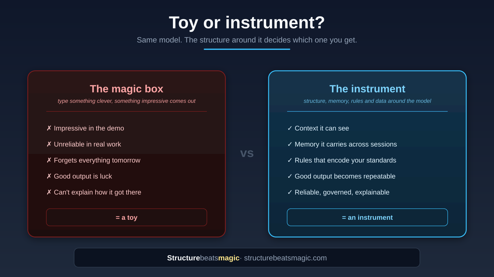
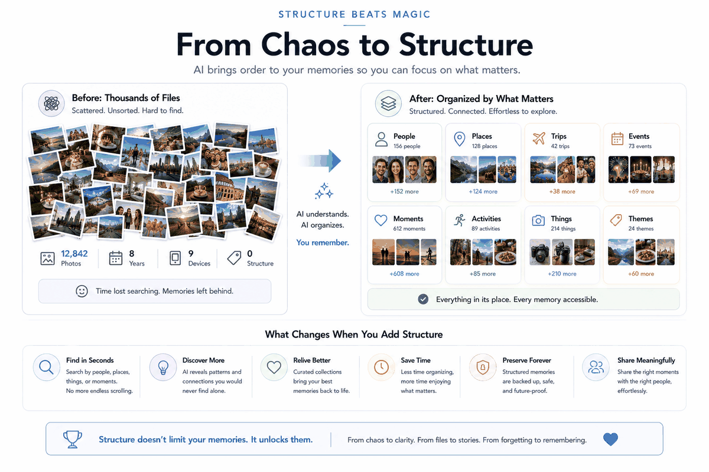
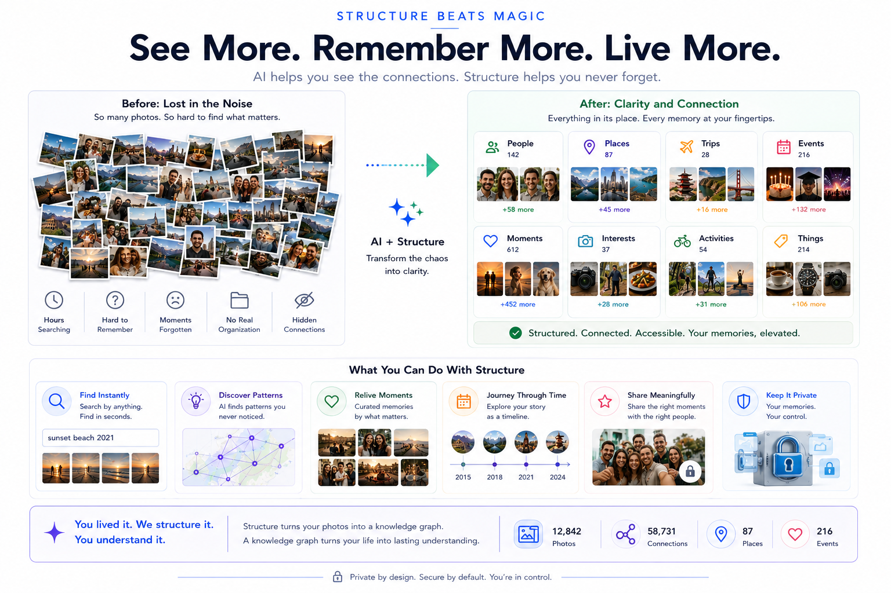
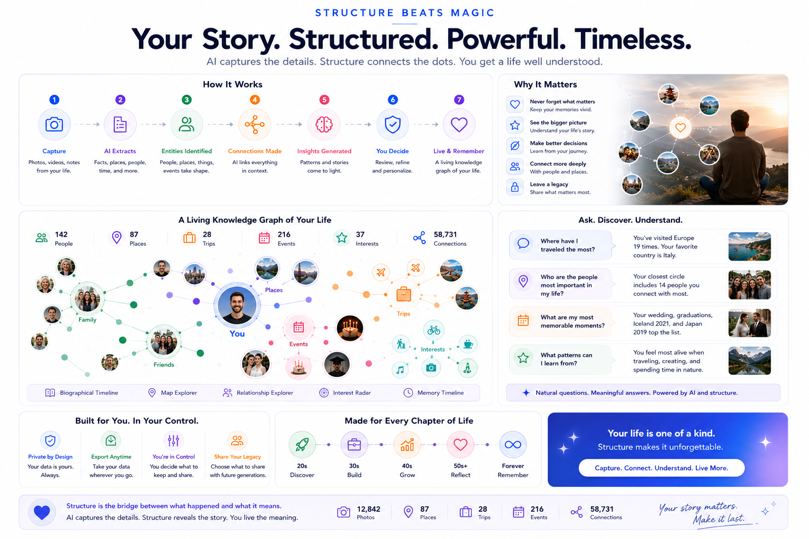
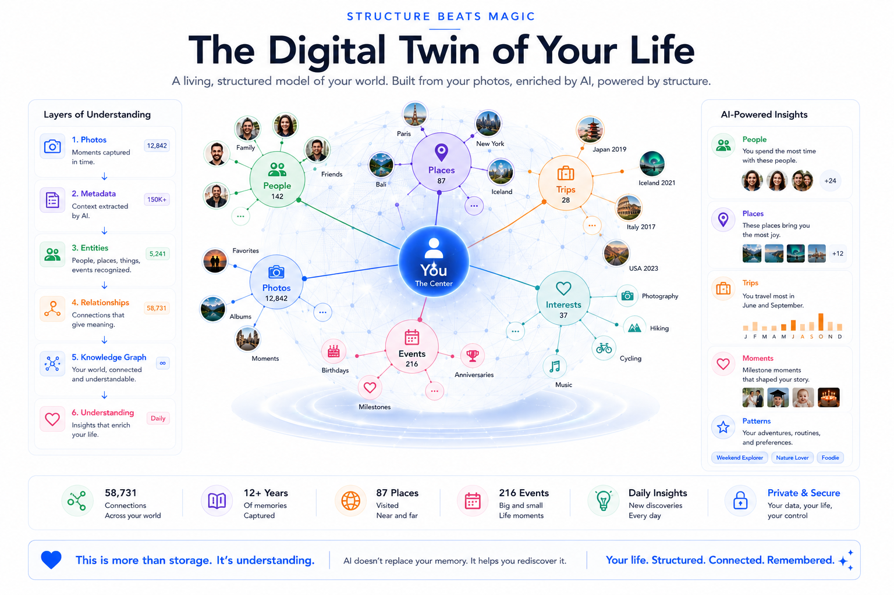
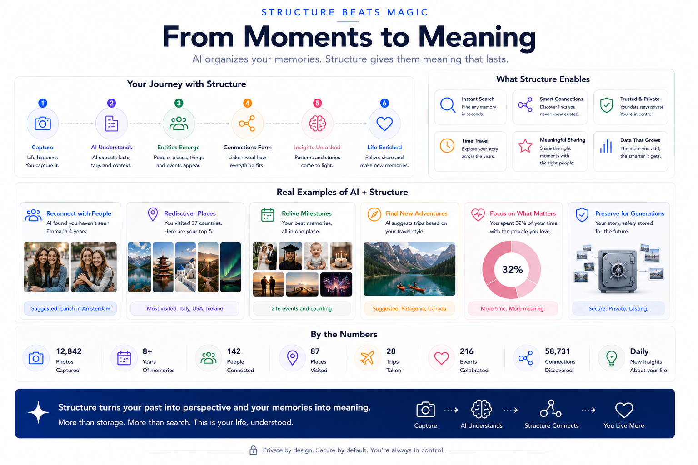
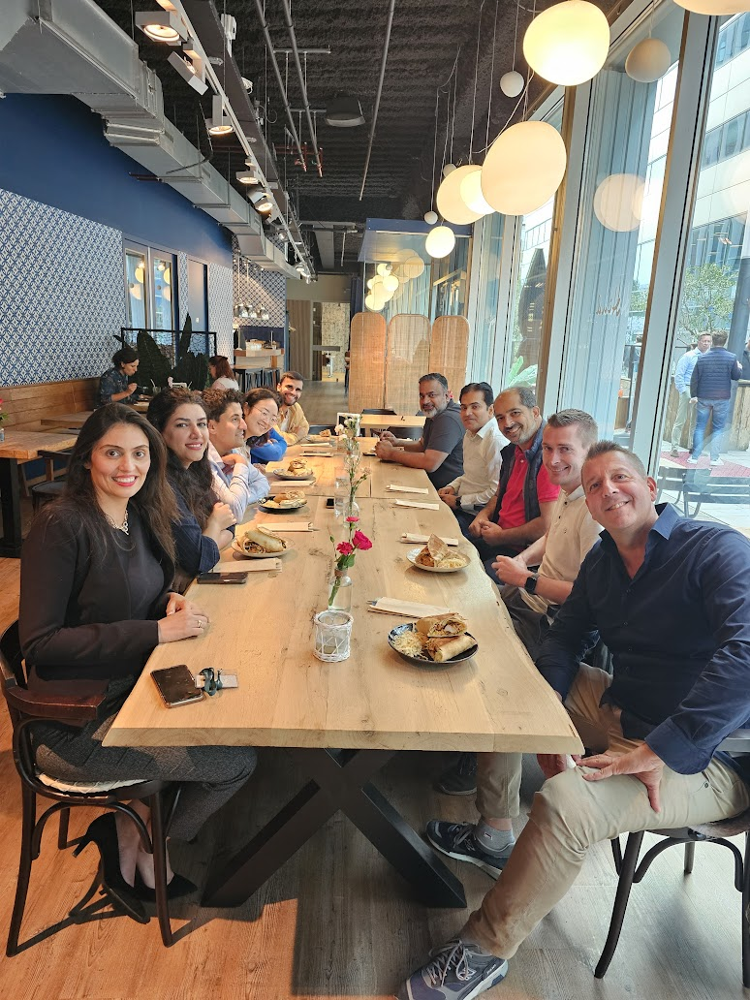

An old discipline — knowledge management — rebuilt on today's stack. Get the structure right and good output stops being luck. It becomes repeatable.
Proven on my own life — 155,000 photos, 271 books, a decade of trips made queryable. Applied in business, from 25 years of data architecture.

A second brain and a data warehouse are the same shape: source → integration → delivery — raw, cleaned, published. These principles don't change between a person and an organisation. Only the data does.

The records you already have — notes, files, mail, data — wherever they live.
Shaped, validated against rules, made consistent and queryable.
Answers, pages, decisions — output you can trust because it's engineered.
Not in the prompt, not in the meeting. A connected, well-shaped knowledge base is what makes the rest work.
Archive becomes source the moment something can query it. The information is usually already there — unread.
The model is roughly the same for everyone. It's leverage, not the moat. Rent the AI; own the structure.
Everyone says "data + AI". Rules are what make output reliable and explainable: generate, validate against known context, flag don't guess.
Codified workflows and know-how, so a result is engineered — not improvised once and lost.
Structure + data + AI + rules + skills compounds into a system — the difference between a toy and an instrument.

You don't plan a Lego model into existence; you play with the bricks until something works. Data and AI are the same. The fastest way to learn what's possible is to tinker in your own life — low stakes, instant feedback, real data you care about.
Every demo here started as play: a curious "could I…?" on a weekend. The personal sphere is the safest, richest sandbox there is.
And here's the move: in parallel, the blocks that prove themselves at home get applied — step by step — in business and across organisations. Same bricks, bigger build.
Play personally → prove the block → apply in business. Curiosity at home becomes capability at work.

There's a trap here, and PKM and home automation are full of people stuck in it: the system becomes a hobby that eats the time it was meant to save. You tinker forever, optimise the optimiser, chase a vault that's never quite perfect. It will never be perfect — even with AI. Build it to live better, not to admire it. Good enough, in service of a real life, beats perfect-and-endless every time.
Anyone can now write an import script, wire a pipeline, vibe-code a tool in an afternoon. Generating code stopped being the bottleneck. So the value moved — to the thing AI doesn't hand you for free.

Scripts that don't fit together. Data in five shapes. Nobody remembers why. It gets messy, time-consuming, and brittle — and the promise inverts: the system stops saving time and starts costing it.
The same easy code lands on a foundation — consistent shapes, rules, validation — so each new piece adds instead of tangling. That's the whole bet: structure is what turns cheap generation into something that lasts.
The blocks are reusable, so share them: insights, code, patterns, rules, skills. Two wins. Others don't rebuild what already works — and well-thought building blocks become high-quality input to your AI tooling, so the next system gets built fast and right. Reusable patterns + rules + skills, handed to an AI, are quality on tap. That's the opposite of everyone privately re-solving the same problem badly.
Share patterns & rules → build quality faster, together
Storing notes is where most "second brain" advice stops. To make AI actually act for you — with focus — it needs a model of you: your history, your desires, your lessons learned, and what you want to exclude. That's an architecture problem, not a prompting trick.

History, desires, and hard-won lessons captured as structured data — not left to whatever the model happens to remember this session.
Focus comes from the negative space. Define what you're not interested in — your anti-preferences — and the AI filters to what matters. Most "personalization" only models the positives; the exclusions are where real focus lives.
Generic AI suggests the famous landmark. A system that knows you avoid high-tourism places simply won't — because the preference is modeled data and a rule, not a hope.
This needs a solid data model, sound architecture, and the right application of AI — with rules, skills, and document structure. It's the difference between a chatbot that forgets you and an assistant that's grounded in who you actually are. That's the next level — and it's exactly the discipline I bring.

None of this is magic — it's a process you can point at. Ingest your data, let AI extract the entities and connections, and the meaning that was always there becomes something you can see and use.

Live demonstrations — real data, real structure, real output. The recipe is here for free. The kitchen is where the work happens.
A DuckDB "brain" — sources, taste rubric, evidence — that scores venues and publishes a static site that grounds every recommendation in first-party, GPS-matched photos.
See how it's built →One source of truth in a database; a website derived from it at build time. No CMS, no runtime database, no drift.
Read the write-up →155k photos, the metadata already present, turned into a queryable geography — and matched to the places a guide recommends.
Read the write-up →Recommends films from your taste and the list of what you've already seen — focus from a modeled preference, not generic "popular now".
How the modelling works →The thesis isn't borrowed — it's lived. The same formula runs at personal scale (proof in the life) and organisational scale (proof in the work).
Not aspirational. Built, running, and the evidence the method is real.
Bank-grade governance without bank-sized overhead.
Governance, validation, explainability, control you can keep — the standards that make a system trustworthy and auditable. Learned over 25 years where it isn't optional.
Structure, generated tools, AI on a solid foundation — speed without the chaos. The way things actually get shipped.
Most people live in one camp and distrust the other. The work is translation: bringing bank-grade discipline into the way builders deliver — so a serious team, beyond the enterprise, gets governance and speed instead of choosing one. Structure is the shared language.
Structure rewards the willing. The method works for people and teams ready to build a foundation — and genuinely doesn't for those looking for a magic box.
The recipe, free. Each piece takes one real, working system and shows the method behind it — so you can build your own.
I read 120 "AI tips" infographics so you don't have to. The good ones all say the same thing — and it isn't a prompt trick.
For knowledge workersI turned 155,000 photos into a queryable, geo-indexed library. The work wasn't taking pictures. It was reading the metadata I already had.
For knowledge workersI turned 271 books I own into 13.8 million words of queryable text. The work wasn't reading. It was extraction.
For knowledge workersTen years of daily notes and 1,128 photos became a curated trip database — without writing a single new trip report.
For knowledge workersThe same trip data tells me where to go next — scored by what I love, what I'd never touch, and what I've already worn out.
For knowledge workersPersonalization knows what you like. It has no idea what you'd never touch — and that gap is where the noise lives.
For knowledge workersNaming what you're not interested in — out loud, in writing — is an act of focus. The via negativa of attention.
For builders & teamsOne source of truth in a database; a website derived from it at build time. No CMS, no runtime database, no drift.
The full picture spans more than one page. Dive into how the system actually works, the intelligence systems built on it, and the thinking it stands on.
Components, the validation loop, the applications already running, the stack, the everyday tools, the exchange boundary, sovereignty and the personal domains.
Intelligence systemsPeople, content, email, marketing and trip intelligence — the same method applied to whole domains of life.
Influences & referencesThe why-and-systems thinkers and the data-architecture canon the thesis is built on.
I'm Jaco van der Laan — 25 years in data architecture, governance learned at the banks, now applying that same discipline to my own knowledge, my own travel, my own decisions. Everything on this site is something I actually run.
The thesis isn't theory I'm selling. It's how I live — structure first, magic never.
— Jaco

High-value advisory and engagements for organisations serious about governed, AI-ready knowledge systems. Senior, hands-on, and selective — engagements, not day-rates.
Jaco van der Laan · Systems & Data →